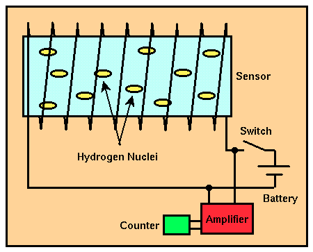

Proton Precession Magnetometer
For land-based magnetic surveys, the most commonly used magnetometer is the proton precession magnetometer. Unlike the fluxgate magnetometer, the proton precession magnetometer only measures the total size of the Earth's magnetic field. These types of measurements are usually referred to as total field measurements. A schematic of the proton precession magnetometer is shown below.

The sensor component of the proton precession magnetometer is a cylindrical container filled with a liquid rich in hydrogen atoms surrounded by a coil. Commonly used liquids include water, kerosene, and alcohol. The sensor is connected by a cable to a small unit in which is housed a power supply, an electronic switch, an amplifier, and a frequency counter.
When the switch is closed, a DC current delivered by a battery is directed through the coil, producing a relatively strong magnetic field in the fluid-filled cylinder. The hydrogen nuclei (protons), which behave like minute spinning dipole magnets, become aligned along the direction of the applied field (i.e., along the axis of the cylinder). Power is then cut to the coil by opening the switch. Because the Earth's magnetic field generates a torque on the aligned, spinning hydrogen nuclei, they begin to precess* around the direction of the Earth's total field. This precession induces a small alternating current in the coil. The frequency of the AC current is equal to the frequency of precession of the nuclei. Because the frequency of precession is proportional to the strength of the total field and because the constant of proportionality is well known, the total field strength can be determined quite accurately.
Like the fluxgate magnetometer, the proton precession magnetometer is relatively easy to construct. Thus, it is also relatively inexpensive ($5,000 - $10,000). The strength of the total field can be measured down to about 0.1 nT. Like fluxgate magnetometers, proton precession magnetometers show no appreciable instrument drift with time.
One of the important advantages of the proton precession magnetometer is its ease of use and reliability. Sensor orientation need only be set to a high angle with respect to the Earth's magnetic field. No precise leveling or orientation is needed. If, however, the magnetic field changes rapidly from place to place (larger than about 600 nT/m), different portions of the cylindrical sensor will be influenced by magnetic fields of various magnitudes, and readings will be seriously degraded. Finally, because the signal generated by precession is small, this instrument can not be used near AC power sources.
*Precession is motion like that experienced by a top as it spins. Because of the Earth's gravitational field, a spinning top not only spins about its axis of rotation, but the axis of rotation rotates about vertical. This rotation of the top's spin axis is referred to as precession.